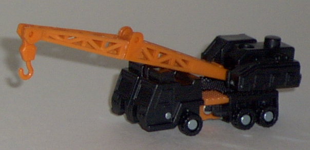
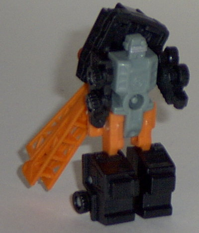
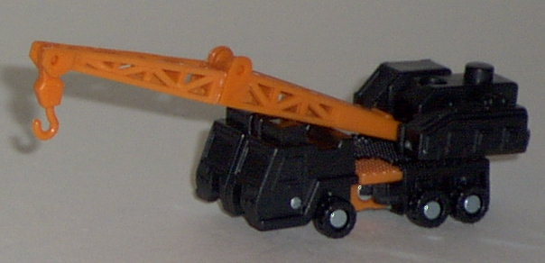
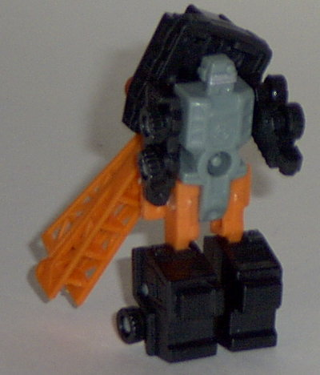
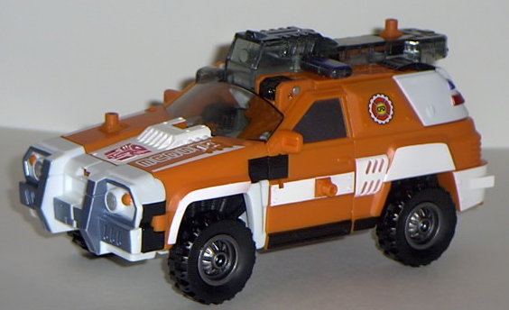
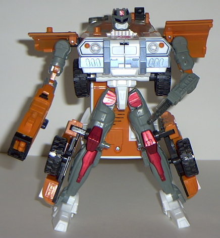

Longarm
(Powerlinx)
Longarm
(Powerlinx)
 
Allegiance : Minicon
Size : Mini-Con
Difficulty of Transformation : Very Easy
Color Scheme : Black, gray, orange, and some silver
Rating : 4.7
(NOTE: Because this set is a repaint, this is not a full-blown review. This mainly covers any changes made to the set and the color scheme, and merely compares it to the original Red Alert w/ Longarm. For a review on the mold itself, read the review of Armada Red Alert w/ Longarm here .)
Longarm
(Powerlinx)


Allegiance
: Minicon
Size
: Mini-Con
Difficulty of Transformation
: Very
Easy
Color Scheme
: Black, gray, orange,
and some silver
Rating
: 4.7
Powerlinx Longarm is
far too similar to the original Longarm for my tastes. He has the EXACT
SAME shade of black in the exact same places on his body as the previous
version, and the tan becomes orange that is actually a bit more obnoxious.
The blue in robot mode has been replaced by a much duller gray, and the
only bit of paint detailing is on the head, which is painted silver. Actually,
this doesn't do much, since the silver blends in with the surrounding gray.
So he basically looks like he has no paint detailing at all. Definitely
not on the hit list of Armada.
No mold changes have
beem made to Powerlinx Longarm.
Powerlinx Longarm's
changes are basically either keeping parts of him the exact same or giving
him duller or more obnoxious colors. A very uninspired repaint.
 Red
Alert (Powerlinx)
Red
Alert (Powerlinx)


Allegiance
: Autobot
Size
: Max-Con
Difficulty of Transformation
: Easy
Color Scheme
: Orange, white, gray,
black, transparent smoky black, and some metallic red, dark blue, metallic
blue-gray, yellow, red, and silver
Powerlinx ports
: 5 (2 gimmicked)
Rating
: 7.7
Powerlinx Red Alert's
color scheme is reminiscent of a beach patrol rescue vehicle, instead of
that of an emergency SUV like his previous version. If it weren't for all
of that orange, I'd probably like the new color scheme. The white goes
together well with the gray, blue, and metallic blue-gray, and I simply
love the way the metallic red looks on his legs in robot mode. Still, there's
too much of that darned orange, which is a shade I find slighly obnoxious.
I know it's on the actual beach rescue vehicles of today... I just don't
like it. The smoky transparent black I'm not that fond of, either. Powerlinx
Red Alert does have some pretty cool details on him this time around, though-
his Autobot symbol on the hood is filled in, for one. It's not just some
big red blob. The word "rescue" is also emblazoned vertically on the left
side of the hood, and the font has a very "computery" feel to it. There's
also some "CFD" symbols on the sides of the vehicle, which no doubt stand
for Cybertron Fire Department. Overall, he definitely has more paint detailing
than his predecessor.
No mold changes have
been made to Powerlinx Red Alert.
Powerlinx Red Alert
would pull ahead of his previous version if he didn't have so much of that
obnoxious orange on him. As it is, he falls slightly behind his previous
version overall, in spite of the increased paint detailing. He's still
an alright toy, though.
No Stats
Review by Beastbot